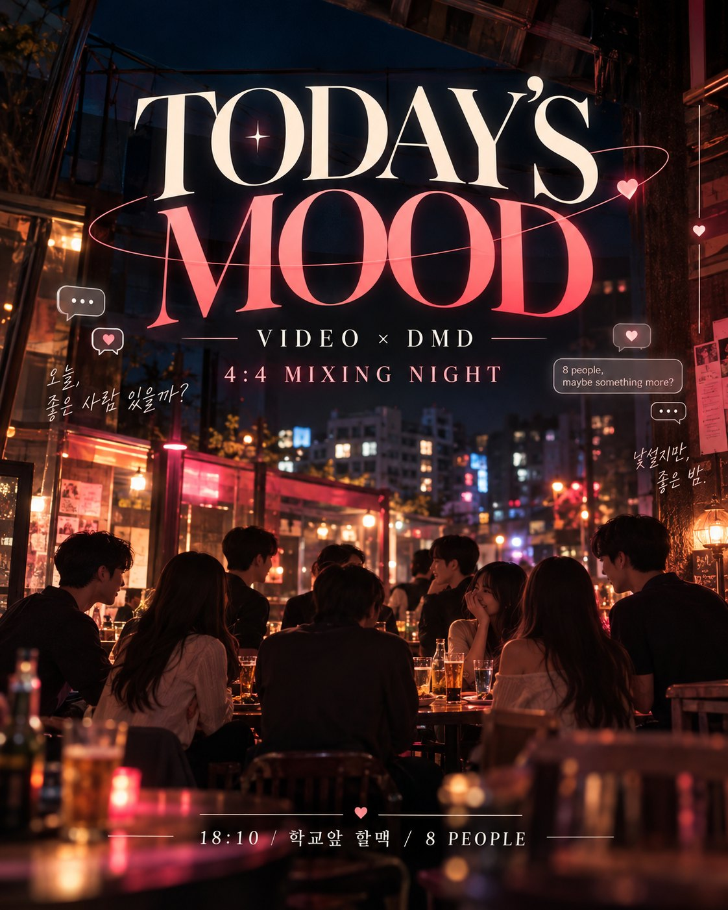

부담 없는 교류
다른 과 사람과 자연스럽게 말 걸고 친해질 수 있는 자리. 친구를 만들러 와도 전혀 어색하지 않은 구성.

WHAT IS TODAY'S MOOD?
VIDEO × DMD 4:4 MIXING NIGHT
친구처럼 가볍게,
분위기는 조금 특별하게.
영상과 남학생 4 × 디지털미디어디자인과 여학생 4 · 양 학과 학회장 주선
새로운 사람들과 편하게 이야기하고 친해지는 4:4 교류 프로그램입니다.
연프의 분위기와 연출만 가볍게 차용합니다.
SCENE 01 CONCEPT
누군가를 꼭 선택하거나 호감을 표현해야 하는 구조는 피하고, 소지품·취향·공통점·익명 질문 같은 장치로 자연스럽게 대화를 열어줍니다.
다른 과 사람과 자연스럽게 말 걸고 친해질 수 있는 자리. 친구를 만들러 와도 전혀 어색하지 않은 구성.
카톡 미션 카드, 챕터명, 자막형 그래픽, 제작진 톤의 공지로만 연애 프로그램 같은 재미를 만듭니다.
공개 투표, 인기 순위, 외모 평가, 러브샷, 강제 매칭은 제외. 마지막 연결도 넣는다면 완전 선택형·비공개로 운영.
자리 이동을 최소화하고 음식·술자리 흐름을 끊지 않도록 20분 간격으로 가볍게 미션만 던집니다.
TIP 할맥은 늦을수록 시끄러워지므로 18:10 이른 시작을 활용합니다.
참가자 안내 문구
이번 자리는 소개팅처럼 무거운 분위기보다 새로운 사람과 자연스럽게 대화하고 친해지는 데 초점을 둔 교류형 과팅입니다. 다만 재미를 위해 연프 같은 무드와 간단한 미션 연출이 포함됩니다. 편한 마음으로 와주시면 됩니다 :)
EMOTION FLOW
연애 감정은 이 과정에서 자연스럽게 생길 수도 있지만, 프로그램이 강요하지 않습니다.
SCENE 02 TIMETABLE
초반 30분은 양 학회장이 현장에서 진행하고, 이후에는 자리를 비운 뒤 단톡방에서 ‘제작진’처럼 필요한 순간에만 개입합니다. 예상 종료 21:00 전후, 이후는 자유.
입장 · 착석 · 음식/음료 주문 · 가볍게 분위기 형성
이름 / 학년 / 요즘 가장 많이 하는 것 / 최근 빠진 것 한 가지
초반에 피할 질문 이상형 · 연애 경험 · 전 애인 · MBTI 과몰입 · 외모 평가
소지품을 모아 랜덤으로 받고 → 주인 추측 → 공개 → 주인이 짧은 이야기.
키링 · 카드지갑 · 에어팟 케이스 · 펜 · 작은 카메라 · 책 · 파우치 · 액세서리 (휴대폰·학생증·고가품·개인정보 물품 X)
소지품은 바로 돌려주지 않습니다 → 20:40 LAST EXCHANGE에서 회수
주선자 현장 퇴장 · 이후엔 근처에서 카톡만 관리
“저희의 현장 진행은 여기까지입니다. 지금부터는 여덟 분끼리 자유롭게 이야기해주시면 됩니다. 대신 중간중간 단톡방으로 몇 가지 카드가 도착할 예정이니 확인해주세요. 그리고 지금 가지고 있는 소지품은 아직 돌려주지 말아주세요 :)”
20분간 아무 미션도 보내지 않습니다. 먼저 자유롭게.
서로의 공통점 3가지 찾기 → TALK ROUND 1
옆자리·맞은편 교체 또는 2:2 조합 변경 → TALK ROUND 2
첫인상과 지금 인상의 차이를 가볍게 → FREE TALK 2 (개입 없음)
익명 질문을 제작진 개인톡으로 접수 → 필터링 후 전달 → SECRET TALK
아직 덜 이야기한 사람과 · 1:1 강제 없음 → FREE MOVE TALK
처음 받은 소지품을 주인에게 돌려주며 궁금했던 것 하나 질문 → FINAL FREE TALK
공식 프로그램 종료 · 이후 2차/추가 대화는 참가자 자유
SCENE 03 KAKAO MISSIONS
실제로 단톡방에 전송될 카드 미리보기입니다. 카드를 고르면 휴대폰 화면에 ‘제작진’ 메시지가 도착합니다. 메시지는 자주 보내지 않고, 대화를 끊지 않는 타이밍에만.
ALL CARDS · 1080 × 1350 (4:5)
SCENE 04 HOST ROLES
두 학회장은 분위기를 여는 사람이지, 참가자 사이에 계속 앉아 있는 사람이 아닙니다.
CONTROL ROOM RULES
01메시지는 너무 자주 보내지 않는다.
02참가자들의 대화를 끊지 않는다.
03미션은 대화를 유도하는 장치일 뿐이다.
04강제 연애·호감 표현 콘텐츠는 피한다.
SCENE 05 RESPONSIBILITY
사용하지 않을 콘텐츠
SECRET NOTE 필터링 기준
전달 OK
요즘 제일 좋아하는 장소 · 쉬는 날 하는 것 · 최근 재밌게 본 콘텐츠 · 혼자 vs 같이 · 일주일 휴가가 생기면?
걸러낼 질문
과거 연애 캐묻기 · 성적인 질문 · 외모 평가 · 연락처 강요 · 경제적/가족 관련 민감 질문
OPTIONAL · AFTER NOTE
더 이야기해보고 싶은 사람의 이름을 제작진에게 보내는 선택형 콘텐츠. 보내지 않아도 괜찮습니다. 서로 같은 사람을 선택한 경우에만 두 사람에게 개인적으로 알립니다.
절대 공개하지 않는 것
득표수 · 0표 여부 · 몰표 여부 · 일방 선택 · 누가 누구를 골랐는지
SCENE 06 VISUAL & LOGISTICS
DESIGN SYSTEM
세리프 디스플레이 타이포 · 얇은 궤도 라인 · 채팅 말풍선 · 자막형 손글씨 · 은은한 글로우. 하트는 최소화하고 핑크 일색은 피합니다.
KAKAO CARD SPEC
LOGISTICS · 확정 / 미정
장소 조건 — 8명이 한/붙은 테이블 · 너무 시끄럽지 않을 것 · 테이블 간 이동 가능 · 카톡 확인 불편 없음 · 음식으로 자리 이동이 막히지 않는 구조
ENDING CREDIT
친구처럼 가볍게,
분위기는 조금 특별하게.
오늘의 무드가 좋은 기억으로 남았으면 합니다.